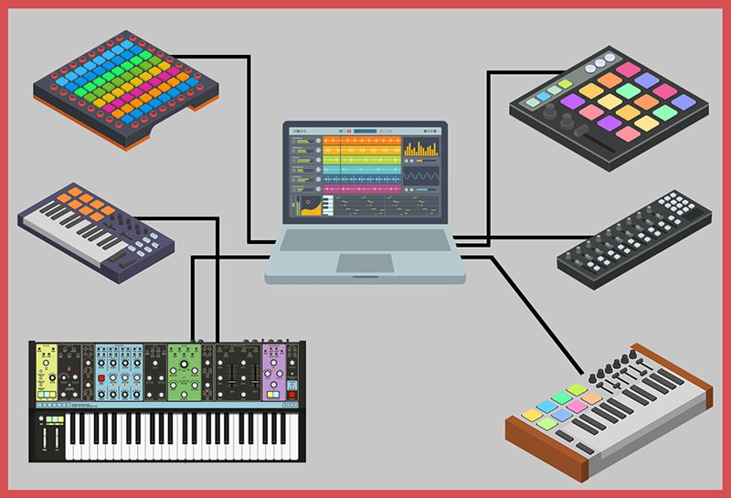
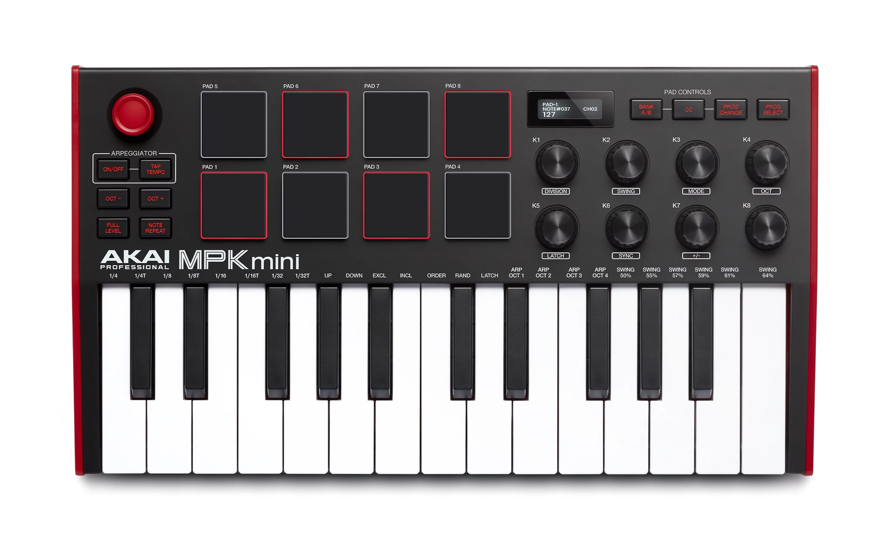
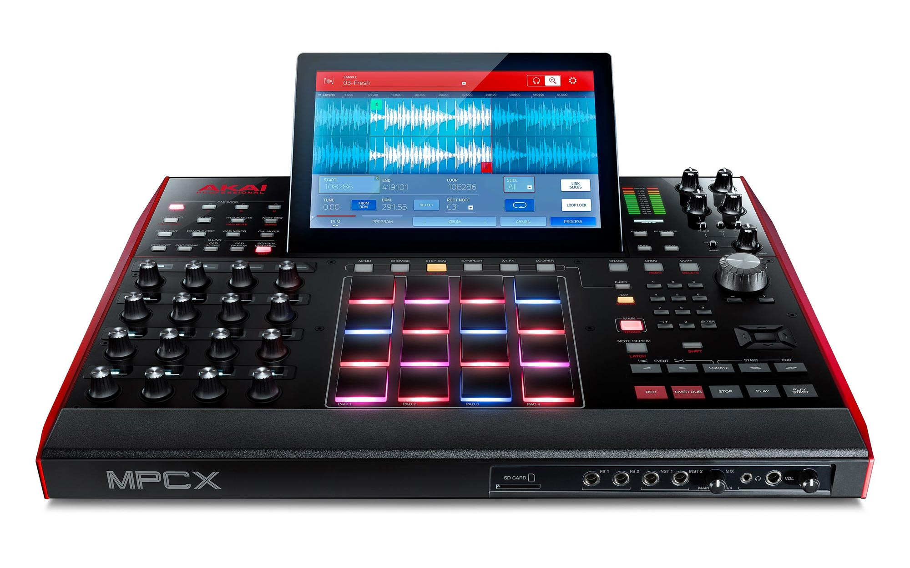
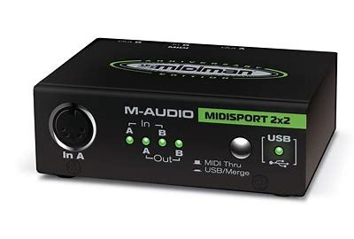
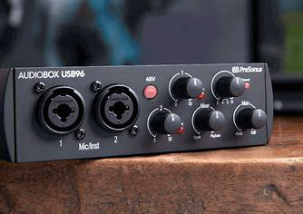
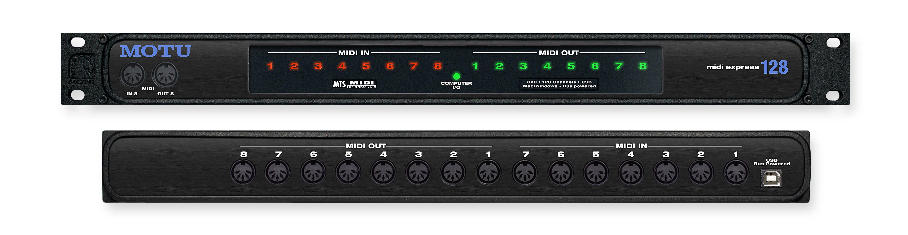
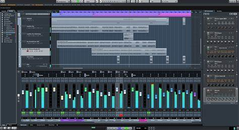
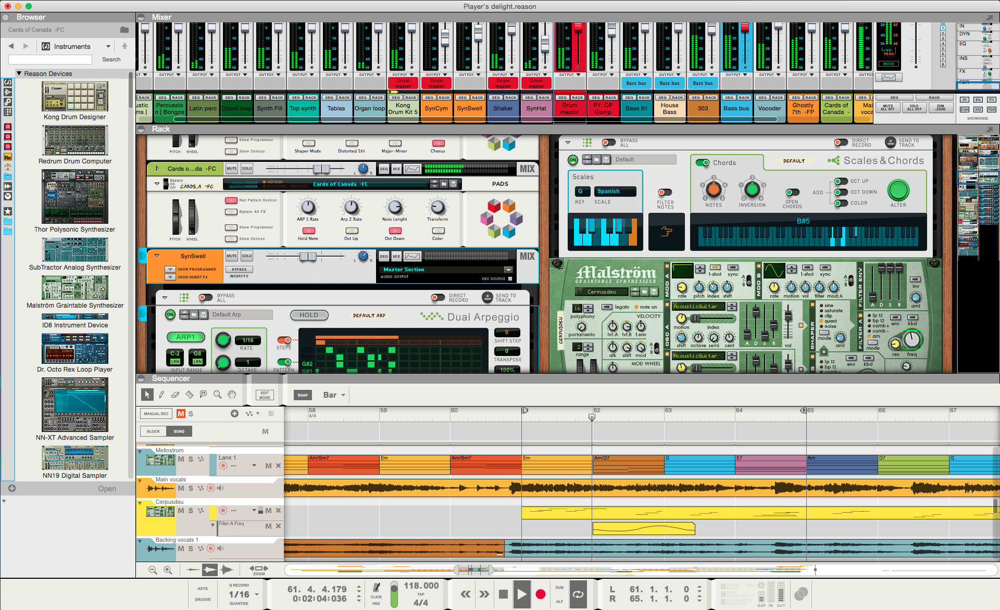
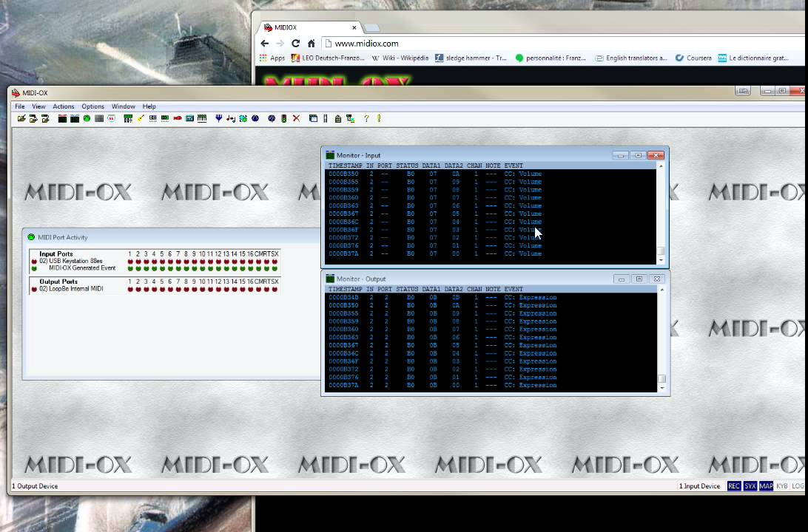
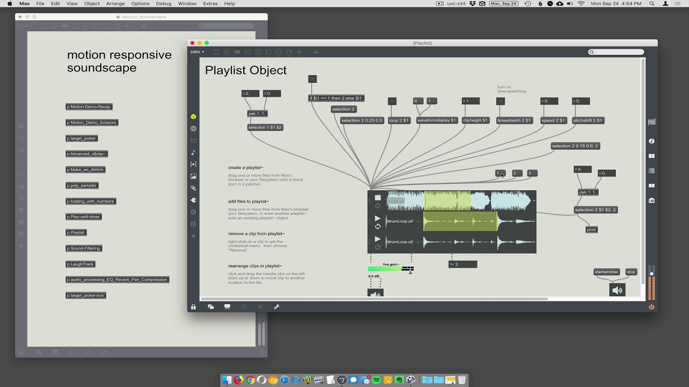

The Musical Instrument Digital Interface protocol, better known as MIDI, has been around since the early
1980s and remains a crucial element in music production today. Anyone working with electronic music or
digital audio workstations (DAWs) like Logic Pro, Pro Tools, Ableton Live, etc., needs to know what MIDI
is
and how it works to produce music successfully.

History
In the early 1980s, manufacturers of electronic music instruments realized there needed to be a standard
means of digital communication between different hardware devices and computers. MIDI technology was
standardized in 1983 by a panel of music industry representatives and is maintained by the MIDI
Manufacturers Association (MMA). This standard allows for efficient communication between devices regardless
of manufacturer. It also established uniform connectivity via five-pin MIDI cables. Later, standards for
communication via USB cables and wireless connections were added to the MIDI spec.
Misconception
One of the common misconceptions for beginners is that MIDI communicates audio signals. It does not. It only
communicates data that instructs connected devices like synthesizers, sound modules and computers to
generate sound. It specifies pitches and provides a way to change other parameters.
MIDI Devices
MIDI devices come in various forms, each serving different roles in music production, performance, and
control. Here are some common types of MIDI devices:
1.MIDI Controllers
MIDI controllers are devices that send MIDI data to control other MIDI-compatible devices or software. They
do
not produce sound on their own but are used to control sound-producing devices or software instruments.
1.Keyboard Controllers: These resemble traditional keyboards and often come
with
additional controls
like
faders, knobs, and pads. Examples include the Akai MPK series and Novation Launchkey.

2. Pad Controllers: These feature a grid of pads that can be used to trigger
drum
sounds,
samples, or
loops. Examples include the Akai MPC series and Native Instruments Maschine.

3. Control Surfaces: Devices with knobs, faders, and buttons designed to
control
software
DAWs and
virtual
instruments. Examples include the Ableton Push and Mackie Control Universal.
4. Wind Controllers: Resemble wind instruments and allow wind players to
control MIDI
instruments. Examples include the Yamaha WX5 and Akai EWI series.
MIDI Devices
2.MIDI Instruments
MIDI instruments generate sound based on MIDI input. They can be standalone hardware units or software
instruments within a DAW.
1. Synthesizers: Electronic instruments that generate audio signals, which can
be
shaped
into different sounds. Examples include the Roland Juno series and Korg Minilogue.
2. Drum Machines: Devices specifically designed to produce drum and percussion
sounds.
Examples include the Roland TR-808 and Elektron Digitakt.
3. Sound Modules: Rack-mounted or desktop units that produce sound when
triggered by
MIDI input.Examples include the Roland JV-1080 and Yamaha Motif Rack.
MIDI Devices
3. MIDI Interfaces
MIDI interfaces provide the necessary connections for MIDI devices to communicate with computers or other
MIDI
devices. They typically offer multiple MIDI input and output ports.
1. USB MIDI Interfaces: Connect to computers via USB and provide MIDI in/out
ports.
Examples include the M-Audio MIDISport and iConnectivity mio series.

2. Audio Interfaces with MIDI: Combine audio input/output capabilities with
MIDI
connectivity. Examples include the Focusrite Scarlett series and PreSonus AudioBox.

3. Standalone MIDI Interfaces: Provide extensive MIDI routing and connectivity
options. Examples include the MOTU MIDI Express XT and ESI M8U eX.

MIDI Devices
4. MIDI Sequencers
MIDI sequencers are devices or software used to record, edit, and playback MIDI data.
1. Hardware Sequencers: Standalone devices for sequencing MIDI data. Examples
include
the Akai MPC series and Elektron Octatrack.
2. Software Sequencers: DAWs and other software applications for sequencing and
arranging MIDI data. Examples include Ableton Live, Logic Pro, and FL Studio.
MIDI Devices
5. MIDI Routers and Patch Bays
MIDI routers and patch bays manage the routing and distribution of MIDI signals between multiple devices.
1. MIDI Patch Bays: Allow multiple MIDI devices to be connected and routed as
needed.
Examples include the MOTU MIDI Timepiece and Roland A-880.
2. MIDI Routers: Provide advanced routing capabilities, often with software
control.
Examples include the Bome MIDI Translator Pro and iConnectivity PlayAUDIO12.
MIDI Message
When you press a key on a MIDI keyboard connected to a computer via some sort of interface or directly via a
USB cable, three basic data values are transmitted:
Note Number
ranging from 0 to 127 (which is the range of seven bit data), these numbers relate directly to the note
to be generated.
Velocity
also ranges from 0 to 127 and can be related to volume — but it’s not the same thing. For example, when
you hit a piano key with a certain velocity it generates various overtone content related to the
intensity of the strike.
Channel
typically ranging 1 through 16, Channel controls where information will be sent within a DAW or to
external instruments set to receive data on that Channel. This allows you to control specific devices or
virtual synths independently.
MIDI and SMPTE Timing Standards
MIDI (Musical Instrument Digital Interface) and SMPTE (Society of Motion Picture and Television Engineers)
are both important timing standards used in different domains:
S.N.
Basis
MIDI
SMPTE
1.
Purpose
MIDI is a technical standard that describes a protocol, digital interface, and connectors for
connecting musical instruments, computers, and related audio devices.
SMPTE timecode is a set of cooperating standards to label individual frames of video or film with a
timecode defined by the SMPTE.
2.
Timing
MIDI timing is based on beats and tempo. It uses ticks (1/24 of a quarter note) to measure time,
allowing precise synchronization of musical events between different MIDI devices.
SMPTE timecode is typically used to synchronize audio and video in film, television, and audio
production. It specifies hours, minutes, seconds, and frames within a given time period.
While both standards deal with timing, they serve different purposes: MIDI for musical synchronization and
control, and SMPTE for audiovisual synchronization in film and television.
MIDI Software
There are various MIDI software applications available for different purposes, from music composition and
production to live performance and MIDI hardware control. Here are some popular MIDI software options:
1. Digital Audio Workstations (DAW)
Ableton Live
Known for its versatility in live performance and electronic music production.
Logic Pro
Apple's professional DAW with robust MIDI editing and recording features.
FL Studio
Popular for its intuitive interface and extensive MIDI capabilities.
Pro Tools
Industry-standard for audio recording, editing, and mixing, with comprehensive MIDI capabilities.
2. MIDI Sequencers and Editors

Cubase
Offers advanced MIDI editing tools and comprehensive DAW functionality.

Reason
Combines MIDI sequencing with virtual instruments and effects.
Studio One
Provides a streamlined workflow with powerful MIDI editing capabilities.
3. Virtual Instruments and Plugins
Native Instruments Komplete
Includes a wide range of virtual instruments with MIDI control capabilities.
Arturia V Collection
Offers classic synthesizers and keyboards with MIDI integration.
Serato Sample
Specializes in sample-based MIDI control and manipulation.
4. MIDI Controllers and Hardware Integration

MIDI-OX
A utility to monitor, analyze, and manipulate MIDI data streams.

Max/MSP
Allows for custom MIDI programming and integration with hardware.
Pure Data (Pd)
Similar to Max/MSP, providing a graphical programming environment for MIDI control.
Conclusion
MIDI (Musical Instrument Digital Interface) devices have revolutionized the way musicians create, perform,
and produce music. These devices, which include keyboards, controllers, drum machines, and more, facilitate
seamless communication between various musical instruments and digital audio workstations (DAWs). By
enabling precise control over musical elements such as pitch, velocity, and timing, MIDI devices offer
unparalleled flexibility and creative potential.